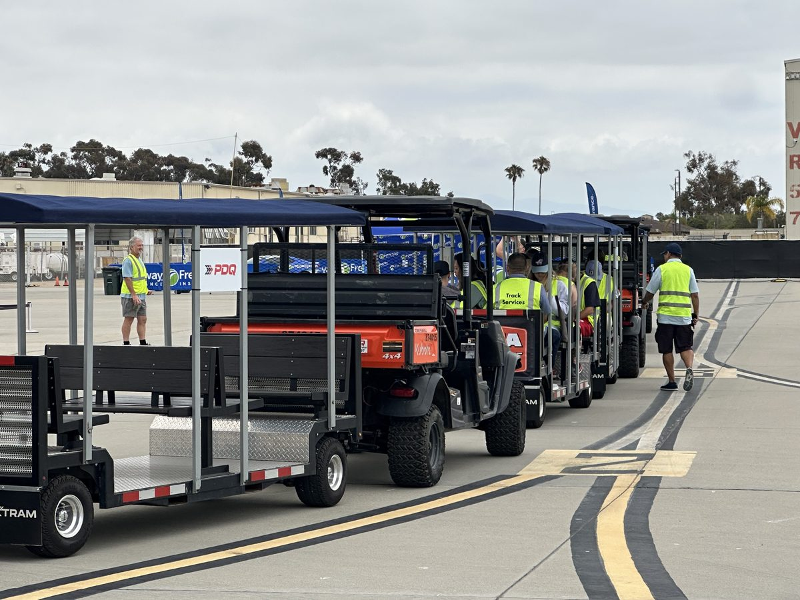

Raceways & motorsports
Cover more ground.
With fewer vehicles.
Motorsports venues span hundreds of acres. Spectators walk miles between parking, grandstands, paddock, and infield. FlexTram deploys event-day tram loops in hours — moving up to 27 fans per trip with one driver across the entire venue.
The problem
What race day logistics
are really costing you
The solution
Event-day tram loops.
From parking to paddock.
FlexTram deploys pop-up tram loops for race weekends in hours. A single compact tram moves up to 27 spectators per trip from remote parking to grandstands, infield, paddock, and vendor areas — with one driver on a fixed, predictable route.
Where a 20-cart fleet needs 20 drivers, five FlexTrams cover the entire venue with five drivers. Fewer vehicles on venue roads means less congestion, fewer pedestrian conflicts, and lower liability on race day.
When the checkered flag drops? FlexTram handles post-event evacuation at high throughput — then stores compactly until the next race. No idle fleet, no year-round commitment.
Driver labor — FlexTram vs. alternatives
One FlexTram
27 passenger capacity
1 driver required
Five 6-seat golf carts
25 passenger capacity
5 drivers required
Two sprinter vans
28 passenger capacity
2 drivers required
Labor only. Excludes benefits, fuel, maintenance, and insurance. Golf cart drivers ~$31k/yr · Sprinter van drivers ~$38k/yr · FlexTram operator ~$31k/yr.
Specifications
Where we operate
Common questions
Can FlexTram handle the terrain at a motorsports venue?
Yes. FlexTram navigates paved and unpaved surfaces — grass, gravel, dirt paths — that full-size shuttle buses can't handle. It's built for the real-world conditions of sprawling motorsports venues.
Can FlexTram be deployed just for race weekends?
Yes. FlexTram deploys in hours and stores compactly after the event. Rent for single race weekends, full seasons, or multi-year deals — scale to your event calendar.
Can FlexTram provide controlled infield and paddock access?
Yes. FlexTram runs fixed, controlled routes — ideal for moving VIP guests, media, and team personnel to restricted areas like the infield, paddock, and pit lane without random golf cart traffic.
How does FlexTram improve post-race evacuation?
With 27 passengers per trip and rapid turnaround on a fixed loop, FlexTram clears remote lots significantly faster than golf cart fleets. Less congestion, faster departures, happier fans.
Is FlexTram ADA accessible for motorsports events?
ADA accessibility is standard on every FlexTram. Accessible boarding and appropriate aisle widths are included — ensuring all fans can enjoy the event regardless of mobility.
Related reading


Race day is coming. Let's talk.
Tell us about your venue — acreage, event schedule, current shuttle setup — and we'll build a custom plan that moves more fans with fewer drivers.
Other industries
Get in Touch →